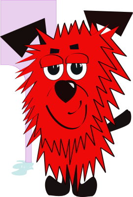
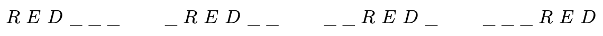
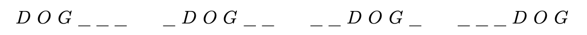

Problem
We can take any word and rearrange all the letters to get another “word”. These new “words” may be nonsensical. For example, you can rearrange the letters in \(MATH\) to get \(MTHA\).
Nalan wants to rearrange all the letters in \(RED DOG\). However, she uses the following rules:
the letters \(R\), \(E\), and \(D\) cannot be adjacent to each other and in that order, and
the letters \(D\), \(O\), and \(G\) cannot be adjacent to each other and in that order.
For example, the “words” \(DOGRED\), \(DDOGRE\), \(GDREDO\), and \(DREDOG\) are examples of unacceptable words in this problem, but \(DROEGD\) is acceptable.
How many different arrangements of the letters in \(RED DOG\) can Nalan make if she follows these rules?

Solution
We will find the total number of possible “words” Nalan can make, and then exclude those “words” which don’t follow the rules (i.e. those which contain \(RED\) or \(DOG\) (or both)).
Determine the total number of “words” formed using \(2\) \(D\)s, \(1\) \(E\), \(1\) \(G\), \(1\) \(O\), and \(1\) \(R\).
First, place the \(E\) in \(6\) possible positions. Then, for each of the \(6\) possible placements of the \(E\), there are \(5\) ways to place the \(G\). There are then \(6\times 5=30\) ways to place the \(E\) and the \(G\). Then, for each of the \(30\) possible placements of the \(E\) and \(G\), there are \(4\) ways to place the \(O\). There are then \(30\times 4=120\) ways to place the \(E\), the \(G\), and the \(O\). Then, for each of the \(120\) possible placements of the \(E\), \(G\), and \(O\), there are \(3\) ways to place the \(R\). There are then \(120\times 3=360\) ways to place the \(E\), the \(G\), the \(O\), and the \(R\).
For each of the \(360\) ways to place the \(E\), \(G\), \(O\), and \(R\), the \(2~D\)s must go in the remaining two empty spaces in \(1\) way. Therefore, there are \(360\times 1=360\) ways to place the \(E\), the \(G\), the \(O\), the \(R\), and the \(2~D\)s.
Thus, there are \(360\) possible “words” that Nalan can make.
Determine how many “words” contain \(RED\).
There are \(4\) ways to place the word \(RED\) in the six spaces. The word \(RED\) could start in the first, second, third, or fourth position.

For each placement of the word \(RED\), there are \(6\) ways to place the letters of the word \(DOG\) in the remaining three spaces: \(DOG\), \(DGO\), \(GDO\), \(GOD\), \(ODG\) and \(OGD\). So there are \(4 \times 6=24\) “words” containing \(RED\).
Determine how many “words” contain \(DOG\).
There are \(4\) ways to place the word \(DOG\) in the six spaces. The word \(DOG\) could start in the first, second, third, or fourth position.

For each placement of the word \(DOG\), there are \(6\) ways to place the letters of the word \(RED\) in the remaining three spaces: \(DER\), \(DRE\), \(EDR\), \(ERD\), \(RDE\) and \(RED\). So there are \(4 \times 6=24\) “words” containing \(DOG\).
Determine how many “words” contain both \(RED\) and \(DOG\).
There are \(4\) “words” that contain both \(RED\) and \(DOG\). They are as follows. \[REDDOG\quad\quad DOGRED \quad\quad REDOGD\quad\quad DREDOG\] These \(4\) “words” have been double-counted, as they would have been counted in case 2 and in case 3.
Thus in total, there are \(24+24-4=44\) “words” that contain \(RED\) or \(DOG\) (or both). Since there are \(360\) possible “words” Nalan can make, we can subtract \(44\) from this to determine the number of these “words” that do not contain \(RED\) or \(DOG\) (or both).
Therefore, \(360-44=316\) “words” can be formed in which the letters \(R\), \(E\) and \(D\) are not adjacent to each other and in that order and the letters \(D\), \(O\) and \(G\) are not adjacent to each other and in that order.